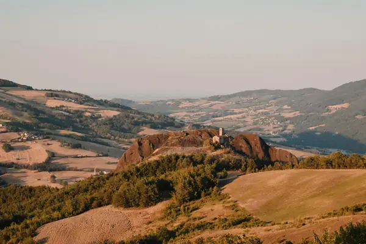

Home › Wine regions › Emilia-Romagna
Emilia-Romagna wine region

Photo: Lorenzo Bignami on Unsplash
Fizzy Lambrusco and everyday Sangiovese.
Vines grow in all 20 regions. Wines are classed DOCG, DOC and IGT.
Climate and soil
Continental climate across the Po plain and Apennine foothills.
Key areas and appellations
Lambrusco di Sorbara, Lambrusco Grasparossa, Romagna Albana, Colli Piacentini
Good to know
Lambrusco is usually a dry, fizzy red. Albana was the first Italian white to get DOCG status.
The grapes of Emilia-Romagna
- Lambrusco (red): red cherry, strawberry, violet. Best known in Emilia-Romagna.
- Sangiovese (red): sour cherry, tomato leaf, herbs. Best known in Chianti, Montalcino.
- Albana (white): apricot, peach, almond, honey. Best known in Romagna.
- Trebbiano (white): lemon, apple, almond. Best known in Italy.
Notable producers in Emilia-Romagna
- Cleto Chiarli
- Lini 910
- Medici Ermete
- Fattoria Zerbina
- Villa Papiano
Official appellations
| Appellation | Status | Style | Grapes |
|---|---|---|---|
| Colli Bolognesi Pignoletto (2010) White wines from the hills south-west of Bologna, on clays, sands and marly soils between the Reno and Panaro rivers. At least 85% Grechetto Gentile (locally Pignoletto), as a still Superiore, frizzante or spumante; the Classico sub-zone (Superiore only, at least 95%) covers the original area and is released about a year after harvest. Good to know: the lighter, wider Pignoletto DOC covers fizzy everyday versions across a larger area. | DOCG | White, Sparkling, Frizzante | Grechetto, Pinot Noir |
| Romagna Albana (1987) In the hills of Romagna between Imola and Forlì-Cesena, Albana (at least 95%) makes a white with unusual grip and body. Styles are secco, amabile, dolce and passito, with a Passito Riserva that must show noble rot. Good to know: as Albana di Romagna it was Italy's first white DOCG in 1987, and it took its current name in 2011. | DOCG | White, Sweet | Albana |
| Bosco Eliceo Coastal sands near Ferrara: tart Fortana reds. | DOC | White, Red | Fortana |
| Colli Bolognesi Hills south-west of Bologna. | DOC | White, Red | Barbera, Cabernet Sauvignon, Pignoletto |
| Colli di Faenza Hills around Faenza. | DOC | White, Red | Sangiovese |
| Colli d'Imola Hills around Imola. | DOC | White, Red | Sangiovese, Trebbiano |
| Colli di Parma Frizzante Malvasia and reds from the Parma hills. | DOC | White, Red | Malvasia, Barbera |
| Colli di Rimini Hills behind Rimini; Rebola is the local Grechetto. | DOC | White, Red | Sangiovese, Rebola |
| Colli di Scandiano e di Canossa Reggio Emilia hills. | DOC | White, Red | Malvasia, Lambrusco |
| Colli Piacentini (1967) Broad DOC (1967) over the hills of Piacenza province at Emilia's western edge, bordering Lombardy's Oltrepò Pavese. It covers varietal wines (Barbera, Bonarda from Croatina, Malvasia, Pinot Nero and more, often frizzante) plus named blends from the Val d'Arda, Val Trebbia and Valnure. Good to know: its rarest wine is Vin Santo di Vigoleno, aged at least five years, four of them in small barrels. | DOC | White, Red, Rosé, Sparkling, Sweet | Barbera, Croatina, Malvasia, Ortrugo, Pinot Noir, Sauvignon Blanc, Chardonnay |
| Colli Romagna Centrale Central Romagna hills. | DOC | White, Red | Sangiovese, Cabernet Sauvignon |
| Gutturnio (2010) Red blend from the clay and limestone hills of the Piacenza Apennines in western Emilia: 55–70% Barbera with 30–45% Croatina (locally Bonarda). The base wine is often frizzante, while Superiore and the Riserva (two years' ageing, six months in wood) are still; Classico may be added to Superiore and Riserva from the historic core zone. Good to know: once part of Colli Piacentini, it became a DOC in its own right in 2010. | DOC | Red, Sparkling | Barbera, Croatina |
| Lambrusco di Sorbara (1970) Lambrusco from the sandy, lean alluvial plain between the Secchia and Panaro rivers just north of Modena. At least 60% Lambrusco di Sorbara with up to 40% Salamino, made frizzante or spumante as red or rosato, from secco to dolce, by tank, classic or ancestral (sur lie) method. Good to know: Sorbara's flowers are partly sterile, so Salamino is planted alongside to pollinate them; the wines are the palest, most floral and sharpest of all Lambruscos. | DOC | Red, Rosé, Sparkling | Lambrusco |
| Lambrusco Grasparossa di Castelvetro (1970) Lambrusco from the first Apennine foothills around Castelvetro, south of Modena, on clay, gravel and limestone sands. At least 85% Grasparossa, made frizzante or spumante as red or rosato, from secco to dolce, usually by tank method; the Monte Barello sub-zone requires 100% Grasparossa. Good to know: Grasparossa (named after its stalks turning red in autumn) gives the deepest-coloured, most tannic Lambrusco, ideal with fatty salumi. | DOC | Red, Rosé, Sparkling | Lambrusco |
| Lambrusco Salamino di Santa Croce (1970) Lambrusco from the flat plains around Santa Croce near Carpi, north of Modena, on fertile alluvial soils. At least 85% Lambrusco Salamino with Ancellotta, Fortana or other Lambruscos, made as red or rosato, still or (usually) frizzante and spumante, from brut nature to dolce. Good to know: Salamino is named after its small, cylindrical bunch, said to look like a salami; the wines sit between Sorbara's freshness and Grasparossa's depth. | DOC | Red, Rosé, Sparkling | Lambrusco |
| Modena Province-wide DOC for Lambrusco and other wines of Modena. | DOC | Red, Sparkling | Lambrusco |
| Ortrugo dei Colli Piacentini Light, often frizzante white from the local Ortrugo grape. | DOC | White | Ortrugo |
| Pignoletto Pignoletto from the wider Bologna and Romagna area. | DOC | White, Sparkling | Grechetto |
| Reggiano Lambrusco and other wines from Reggio Emilia. | DOC | Red, Sparkling | Lambrusco |
| Reno Plains DOC north of Bologna. | DOC | White, Red | Albana, Trebbiano |
| Romagna (2011) Umbrella DOC launched with the 2011 vintage for the Apennine foothills between Imola and Rimini, on clay, sandstone and spungone limestone. Romagna Sangiovese (85% minimum) comes as normale, Superiore and Riserva, and with a named sub-zone such as Brisighella, Predappio or Modigliana; Trebbiano, Pagadebit (Bombino Bianco), Cagnina and Albana Spumante complete the list. Good to know: sub-zone Riservas need 24 months' ageing, and the still Albana wines belong to the separate Romagna Albana DOCG. | DOC | Red, White, Sparkling, Sweet | Sangiovese, Trebbiano, Albana, Bombino Bianco |
Emilia-Romagna wines to try
Cleto Chiarli Vecchia Modena Premium
Emilia-Romagna · Lambrusco di Sorbara · Lambrusco
Pale, dry and frothy: strawberry, raspberry and bright acidity.
Food: Mortadella, tortellini, pizza
Fattoria Zerbina Pietramora
Emilia-Romagna · Romagna Sangiovese Marzeno Riserva DOC · Sangiovese
Dense, dark-fruited Romagna Sangiovese with black cherry, iron and spice, built to age a decade or more.
Food: Wild boar ragù, roast lamb
Paltrinieri Radice Lambrusco di Sorbara
Emilia-Romagna · Lambrusco di Sorbara DOC · Lambrusco
Pale, bone-dry bottle-fermented Sorbara: wild strawberry, pink grapefruit and a crisp, frothy finish.
Food: Mortadella, gnocco fritto
Food to try with Emilia-Romagna wines
- Pasta & tomato: Tomato's high acidity needs an equally fresh wine; Sangiovese's bright cherry fruit and acidity is a natural match for tomato sauce.
- Pizza: Sangiovese's acidity matches tomato and cuts melted mozzarella, and Prosecco's bubbles keep a salty, cheesy slice tasting fresh.
- Spaghetti carbonara: Crisp Italian whites with almond and citrus notes cut through egg, Pecorino and guanciale; Frascati is Rome's own pairing.
- Lasagne: Rich meat ragù and béchamel need medium-bodied Italian reds whose high acidity balances tomato and cuts through cheese.
- Chicken cacciatore: A hunter-style tomato, herb and olive braise wants a high-acid Italian red that matches the sauce's tang and savoury edge.
- Spaghetti bolognese: A meaty tomato ragù pairs naturally with Italian reds whose bright acidity matches the sauce and cuts the richness.
More wine regions in Italy
See Emilia-Romagna on the wine map
The Wine Reference newsletter
New wines, stories and career guides, one email a week at most.
Over 18s only. Unsubscribe any time with one click. Your email is stored securely by Kit and never shared.
Support The Wine Reference
This guide is free, with no paywall. If it helped you choose a bottle, you can buy me a glass and keep it growing.
🍷 Buy me a glass